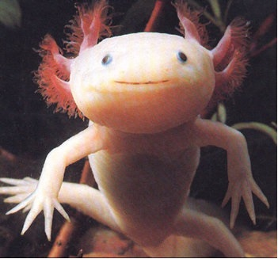

Hubo un tiempo en que yo pensaba mucho en los axolotl. Iba a verlos al acuario del Jardín des Plantes y me quedaba horas mirándolos, observando su inmovilidad, sus oscuros movimientos. Ahora soy un axolotl.
El azar me llevo hasta ellos una mañana de primavera en que París habría su cola de pavorreal después de la lenta invernada. Bajé por el bulevar de Port-Royal, tomé St. Marcel y L'Hópital, vi los verdes entre tanto gris y me acorde de los leones. Era amigo de los leones y las panteras, pero nunca había entrado en el húmedo y oscuro edificio de los acuarios. Dejé mi bicicleta contra las rejas y fui a ver los tulipanes. Los leones estaban feos y tristes y mi pantera dormía. Opté por los acuarios, soslayé peces vulgares hasta dar inesperadamente con los axolotl. Me quede una hora mirándolos y salí, incapaz de otra cosa.
En la biblioteca Sainte-Geneviéve consulte un diccionario y supe que los axolotl son formas larvales, provistas de branquias, de una especie de batracios del género amblistoma. Qué eran mexicanos lo sabía ya por ellos mismos, por sus pequeños rostros rosados aztecas y el cartel en lo alto del acuario. Leí que se han encontrado ejemplares en África capaces de vivir en tierra durante los periodos de sequía y que continúan su vida en el agua al llegar la estación de las lluvias. Encontré su nombre español, ajolote, la mención de que son comestibles y que su aceite se usaba (se diría que no se usa más) como el de hígado de bacalao.
No quise consultar obras especializadas, pero volví al día siguiente al Jardin des Plantes. Empecé a ir todas las mañanas, a veces de mañana y de tarde. El guardián de los acuarios sonreía perplejo al recibir el billete. Me apoyaba en la barra de hierro que bordea los acuarios y me ponía a mirarlos. No hay nada de extraño en esto, por que desde un primer momento comprendí que estábamos vinculados, que algo infinitamente perdido y distante seguía sin embargo uniéndonos. Me había bastado detenerme aquella primera mañana ante el cristal donde unas burbujas corrían en el agua . Los axolotl se amontonaban en el mezquino y angosto (sólo yo puedo saber cuán angosto y mezquino) piso de piedra y musgo de acuario. Había nueve ejemplares, y la mayoría apoyaba la cabeza contra el cristal, mirando con sus ojos de oro a los que se acercaban. Turbado, casi avergonzado, sentí como una impudicia asomarme a esas figuras silenciosas e inmóviles aglomeradas en el fondo del acuario. Aislé mentalmente una, situada a la derecha y algo separada de las otras, para estudiarla mejor. Vi un cuerpecito rosado y como traslúcido (pensé en las estatuillas chinas de cristal lechoso), semejante a un pequeño lagarto de quince centímetros, terminado en una cola de pez de una delicadeza extraordinaria, la parte más sensible de nuestro cuerpo. Por el lomo le corría una aleta transparente que se fusionaba con la cola, pero lo que me obsesionó fueron las patas, de una finura sutilísima, acabadas en menudos dedos, en uñas minuciosamente humanas. Y entonces descubrí sus ojos, su cara. Un rostro inexpresivo sin otro rasgo que los ojos, dos orificios como cabezas de alfiler, enteramente de un oro transparente, carentes de toda vida pero mirando, dejándose penetrar por mi mirada que parecía pasar a través del punto áureo y perderse en un diáfano misterio interior. Un delgadísimo halo negro rodeaba el ojo y lo inscribía en la came rosa, en la piedra rosa de la cabeza vagamente triangular pero con lados curvos e irregulares, que le daban una total semejanza con una estatuilla corroída por el tiempo. La boca estaba disimulada por el plano triangular de la cara, sólo de perfil se adivinaba su tamaño considerable; de frente una fina hendidura rasgaba apenas la piedra sin vida. A ambos lados de la cabeza, donde hubieran debido estar las orejas, le crecían tres ramitas rojas como de coral, una excrescencia vegetal, las branquias, supongo. Y era lo único vivo en él, cada diez o quince segundos las ramitas se enderezaban rígidamente y volvían a bajarse. A veces una pata se movía apenas, yo veía los diminutos dedos posándose con suavidad en el musgo. Es que no nos gusta movernos mucho, y el acuario es tan mezquino; apenas avanzamos un poco nos damos con la cola o la cabeza de otro de nosotros; surgen dificultades, pelea, fatiga. El tiempo se siente menos si nos estamos quietos.
Fue su quietud lo que me hizo inclinarme fascinado la primera vez que vi los axolotl. Oscuramente me pareció comprender su voluntad secreta, abolir el espacio y el tiempo con una inmovilidad indiferente. Después supe mejor, la contracción de las branquias, el tanteo de las finas patas en las piedras, la repentina natación (algunos de ellos nadas con la simple ondulación del cuerpo) me probó que eran capaces de evadirse de ese sopor mineral en que pasaban horas enteras. Sus ojos, sobre todo, me obsesionaban. Al lado de ellos, en los restantes acuarios, diversos peces me mostraban la simple estupidez de sus hermosos ojos semejantes a los nuestros. Los ojos de los axolotl me decían de la presencia de una vida diferente, de otra manera de mirar. Pegando mi cara al vidrio (a veces el guardián tosía, inquieto) buscaba ver los diminutos puntos áureos, esa entrada al mundo infinitamente lento y remoto de las criaturas rosadas. Era inútil golpear con el dedo en el cristal, delante de sus caras; jamás se advertía la menor reacción. Los ojos de oro seguían ardiendo con su dulce, terrible luz; seguían mirándose desde una profundidad insondable que me daba vértigo.
Y sin embargo estaban cerca. Lo supe antes de esto, antes de ser un axolotl. Lo supe el día en que me acerqué a ellos por última vez. Los rasgos antropomórficos de un mono revelan, al revés de lo que cree la mayoría, la distancia que va de ellos a nosotros. La absoluta falta de semejanza de los axolotl con el ser humano me probó que mi reconocimiento era válido que no me apoyaba en analogías fáciles. Sólo las manecitas... Pero una lagartija tiene también manos así, y en nada se nos parece. Yo creo que era la cabeza de los axolotl, esa forma triangular rosada con los ojillos de oro. Eso miraba y sabía. Eso reclamaba. No eran animales.
Parecía fácil, casi obvio, caer en la mitología. Empecé viendo en los axolotl una metamorfosis que no conseguía anular una misteriosa humanidad. Los imagine conscientes, esclavos de su cuerpo, infinitamente condenados a un silencio abisal, a una reflexión desesperada. Su mirada ciega, el diminuto disco de oro inexpresivo y sin embargo terriblemente lúcido, me penetraba como un menaje: "Sálvanos, sálvanos". Me sorprendía musitando palabras de consuelo, transmitiendo pueriles esperanzas. Ellos seguían mirándome, inmóviles; de pronto las ramillas rosadas de las branquias se enderezaban. En ese instante yo sentía como un dolor sordo; tal vez me veían, captaban mi esfuerzo por penetrar en lo impenetrable de sus vidas. No eran seres humanos, pero en ningún animal había encontrado una relación tan profunda conmigo. Los axolotl eran como testigos de algo, y a veces como horribles jueces. Me sentía innoble frente a ellos; había una pureza tan espantosa en esos ojos transparentes. Eran larvas, pero larva quiere decir máscara y también fantasma. Detrás de esas caras aztecas, inexpresivas y sin embargo de una crueldad implacable, ¿ qué imagen esperaba su hora ?.
Les temía. Creo que no haber sentido la proximidad de otros visitantes y del guardián, no me hubiese atrevido a quedarme solo con ellos. "Usted se los come con los ojos", me decía riendo el guardián, que debía suponerme un poco desequilibrado. No se daba cuenta que eran ellos los que me devoraban lentamente por los ojos, en un canibalismo de oro. Lejos del acuario no hacía más que pensar en ellos, era como si me influyeran a distancia. Llegué a ir todos los días, y de noche los imaginaba inmóviles en la oscuridad, adelantando lentamente una mano que de pronto encontraba la de otro. Acaso sus ojos veían en plena noche, y el día continuaba para ellos indefinidamente. Los ojos de los axolotl no tienen párpados.
Ahora sé que no hubo nada de extraño, que eso tenía que ocurrir. Cada mañana, al inclinarme sobre el acuario, el reconocimiento era mayor. Sufrían, cada fibra de mi cuerpo alcanzaba ese sufrimiento amordazado, esa tortura rígida en el fondo del agua. Espiaban algo, un remoto señorío aniquilado, un tiempo de libertad en que el mundo había sido de los axolotl. No era posible que una expresión tan terrible que alcanzaba a vencer la inexpresividad forzada de sus rostros de piedra, no portara un mensaje de dolor, la prueba de esa condena eterna, de ese infierno líquido que padecían. Inútilmente quería probarme que mi propia sensibilidad proyectaba en los axolotl una conciencia inexistente. Ellos y yo sabíamos. Por eso no hubo nada de extraño en lo que ocurrió. Mi cara estaba pegada al vidrio del acuario, mis ojos trataban una vez más de penetrar el misterio de esos ojos de oro sin iris y sin pupila. Veía muy de cerca la cara de un axolotl inmóvil junto al vidrio. Sin transición, sin sorpresa, vi mi cara contra el vidrio, en vez del axolotl vi mi cara contra el vidrio, la vi fuera del acuario, la vi del otro lado del vidrio. Entonces mi cara se apartó y yo comprendí.
Sólo una cosa era extraña: seguir pensando como antes, saber. Darme cuenta de eso fue en el primer momento como el horror del enterrado vivo que despierta a su destino. Afuera, mi cara volvía a acercarse al vidrio, veía mi boca de labios apretados por el esfuerzo de comprender a los axolotl. Yo era un axolotl y sabía ahora instantáneamente que ninguna comprensión era posible. Él estaba fuera del acuario, su pensamiento era un pensamiento fuera del acuario. Conociéndolo, siendo él mismo, yo era un axolotl y estaba en mi mundo. El horror venía -lo supe en el mismo momento- de creerme prisionero en un cuerpo axolotl, transmigrado a él con mi pensamiento de hombre enterrado vivo en un axolotl, condenado a moverme lúcidamente entre criaturas insensibles. Pero aquello cesó cuando una pata vino a rozarme la cara, cuando moviéndome apenas a un lado vi a un axolotl junto a mí que me miraba, y supe que también él sabía , sin comunicación posible pero tan claramente. O yo estaba también en él, o todos nosotros pensábamos como un hombre, incapaces de expresión, limitados al resplandor dorado de nuestros ojos que miraban la cara del hombre pegada al acuario.
Él volvió muchas veces, pero viene menos ahora. Pasa semanas sin asomarse. Ayer lo vi, me miró largo rato y se fue bruscamente, Me pareció que no se interesaba tanto por nosotros, que obedecía a una costumbre. Como lo único que hago es pensar, pude pensar mucho en él. Se me ocurre que al principio continuamos comunicados, que él se sentía más que nunca unido al misterio que lo obsesionaba. Pero los puentes están cortados entre él y yo, por que lo que era su obsesión es ahora un axolotl, ajeno a su vida de hombre. Creo que al principio yo era capaz de volver en cierto modo a él -ah, sólo en cierto modo- y mantener alerta su deseo de conocernos mejor. Ahora soy definitivamente un axolotl, y si pienso como un hombre es sólo porque todo axolotl, piensa como un hombre dentro de su imagen de piedra rosa. Me parece que de todo esto alcancé a comunicarle algo en los primeros días, cuando yo era todavía él. Y en esta soledad final, a la que él ya no vuelve, me consuela pensar que acaso va a escribir sobre nosotros, creyendo imaginar un cuento va a escribir todo esto sobre los axolotl.